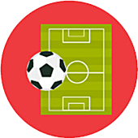
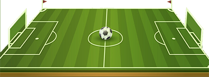
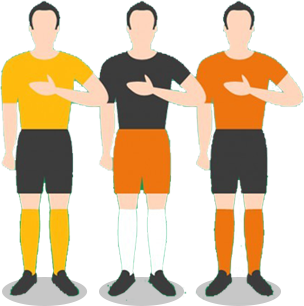
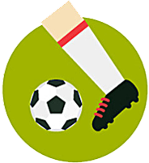
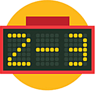
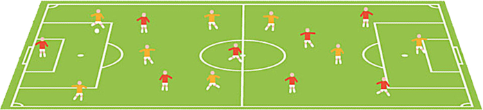

Q1
本届欧洲杯，哪两支俱乐部
贡献的国脚最多？

本届欧洲杯，哪两支俱乐部
贡献的国脚最多？
本届欧洲杯24支球队中，以
下哪支球队的球员全部来自
本国联赛？
本届欧洲杯共有552名球员，
以下哪个国家的非顶级联赛
贡献的球员最多？

以下哪个联赛贡献的国脚是
最少的？

谁是本届欧洲杯最年轻的球
员？

本届欧洲杯中，有几名球员
来自中超联赛？


本届欧洲杯中，来自不同球
会俱乐部分布最多的国家队
是？

国家队阵中，参加2015/16
赛季欧洲冠军联赛人数最多
的球队是？
本届欧洲杯，哪个球队的平
均身高是最高的？
本届欧洲杯最年长的球员是
谁？
扫描二维码下载智慧北京客户端
了解更多精彩资讯
抱歉！答错了！
正确答案：
C 红军和老妇人分别为欧洲杯
贡献了12名国脚。